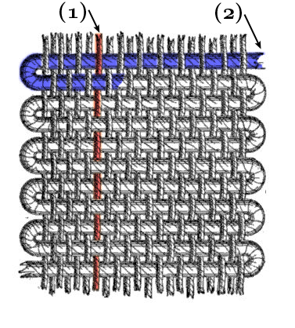

Los materiales textiles¶
Son materiales que agrupan desde las telas usadas en ropa o muebles, hasta un balón de cuero o la vela de un barco. Aunque su origen es muy diverso, todos tienen en común su gran flexibilidad y los procesos de cosido o pegado que se utilizan en la fabricación de productos terminados.
Hilos¶
Son hebras largas fabricadas a partir del trenzado de fibras cortas de origen animal, vegetal o plástico.
- Seda
- Fibra de origen animal (gusanos de seda). Es una de las fibras naturales más fuertes.
- Lana
- Fibra de origen animal (pelo de oveja).
- Algodón
- Fibra de origen vegetal.
- Lino
- Fibra de origen vegetal.
- Poliéster, nailon y otros plásticos
- Fibra de origen artificial.
Textiles¶
Son láminas formadas por hilos unidos de diversas maneras o formadas por piel animal.
- Fieltro
Está formado por fibras unidas mediante vapor y presión, sin tejer, por lo que no es muy resistente.
Se utiliza para fabricar sombreros, faldas, chaquetas, alfombras, etc. Necesita en ocasiones un forro para añadir más resistencia mecánica.
- Tejidos planos o telas
Están formados por varios hilos que se entrecruzan en perpendicular. Se fabrican en telares que entrelazan la trama (2) con la urdimbre (1).
Las telas se usan para fabricar todo tipo de ropa, velas, recubrimientos de muebles, etc.
- Tejido de punto
Está fabricado haciendo muchos nudos a un único hilo (tricotaje) hasta formar un tejido. El resultado es más elástico que las telas o el fieltro.
Se utiliza en calcetines o jerseys.
- Cueros
Provienen de la piel curtida de los animales. Los más utilizados son los cueros de vaca, cerdo y oveja.
Se utilizan para fabricar zapatos, guantes, cinturones, cazadoras, sillones, recipientes para líquidos, etc.
En la antigüedad se utilizó para hacer libros de pergamino que han resistido el paso de los siglos hasta hoy en día.
{kind=link}